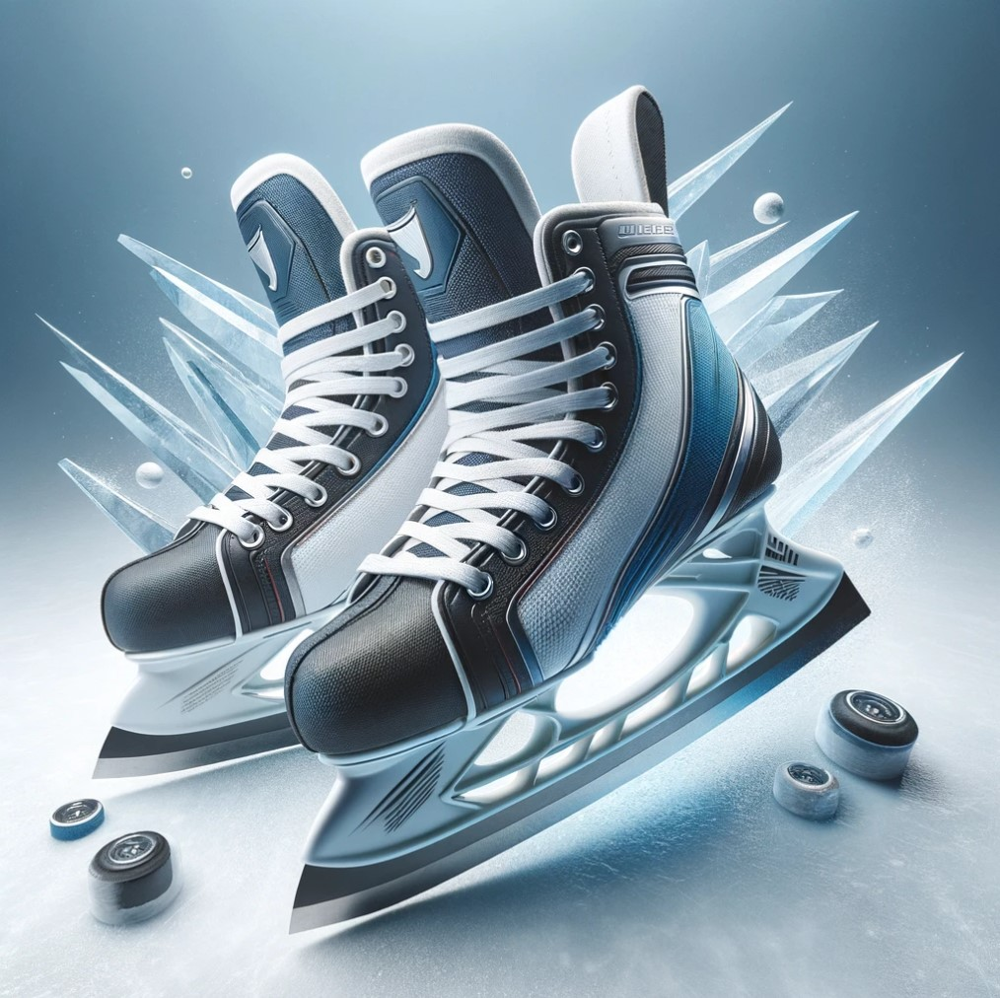

Хоккейные коньки "Ледовый мастер"
Краткое описание товара
Идеальный выбор для игроков всех уровней, "Ледовый мастер" представляет собой синтез инновационных технологий и классического дизайна.
Эти коньки обеспечивают исключительную поддержку стопы и комфорт благодаря усовершенствованной системе амортизации и анатомически формованному ботинку.
Лезвия из высококачественной стали гарантируют отличное скольжение и маневренность на льду, делая каждое движение точным и уверенным.
Подробное описание товара
Хоккейные коньки "Ледовый мастер" представляют собой вершину инноваций в области спортивного оборудования, специально разработанные для тех, кто стремится к максимальной производительности на льду.
Благодаря современным технологиям и высококачественным материалам, эти коньки обеспечивают исключительный комфорт, непревзойденную поддержку и оптимальное управление,
что делает их идеальным выбором как для профессиональных спортсменов, так и для аматоров, стремящихся улучшить свои навыки.